Module 09 — Gestion des espaces de stockage — File System¶
La transcription du support Drive et l’aide pédagogique sont séparées pour rendre leur provenance explicite.
SOURCE DRIVE · TRANSCRIPTION DU SUPPORT
Le contenu des documents du dossier TSSR est transcrit ci-dessous, page par page. Les textes, tableaux et illustrations sont intégrés à la page Web ; aucun PDF ENI n’est diffusé par ce lecteur. Les versions et les consignes restent celles des supports de formation. Les compléments IA sont conservés dans leur onglet distinct.
Support · RES24_0050B - M09 - Linux Administration (Debian) · 43 pages transcrites
Page 1
Administration Debian
GNU/Linux
Module 09 – Gestion des espaces de stockage – File System
Page 2
Gestion des espaces de stockage – File System
Objectifs
• Découvrir des systèmes de fichiers Linux
• Appliquer des FS sur l’espace de stockage
• Gérer les systèmes de fichiers
• Monter les systèmes de fichiers
Préparer le stockage à recevoir des données
Texte relevé dans les illustrations
End
Page 3
Gestion des espaces de stockage – File System
Considérations
générales sur les
systèmes de fichiers
Page 4
Considérations générales sur les systèmes de fichiers
Considérations générales
• Tous les systèmes de fichiers de type Unix sont basés sur le
même principe et les mêmes éléments élémentaires. Les
systèmes de fichiers Unix sont segmentés en blocs de données,
actuellement à 4 Ko par défaut
• Chaque bloc pourra avoir différentes structures :
• Superbloc : bloc contenant les informations vitales du système de fichiers
• Inode : bloc contenant les inodes contenant les informations d’un fichier
• Bloc d’indirection : bloc redirigeant vers d’autres blocs (cf. plus loin dans
ce chapitre)
• Bloc de données : bloc contenant les données réelles du fichier
• Table des inodes : bloc contenant la liste des blocs d’inodes
• Table des inodes libres : bloc contenant la liste des inodes libres
• Table des blocs libres : bloc contenant la liste des blocs de données libres
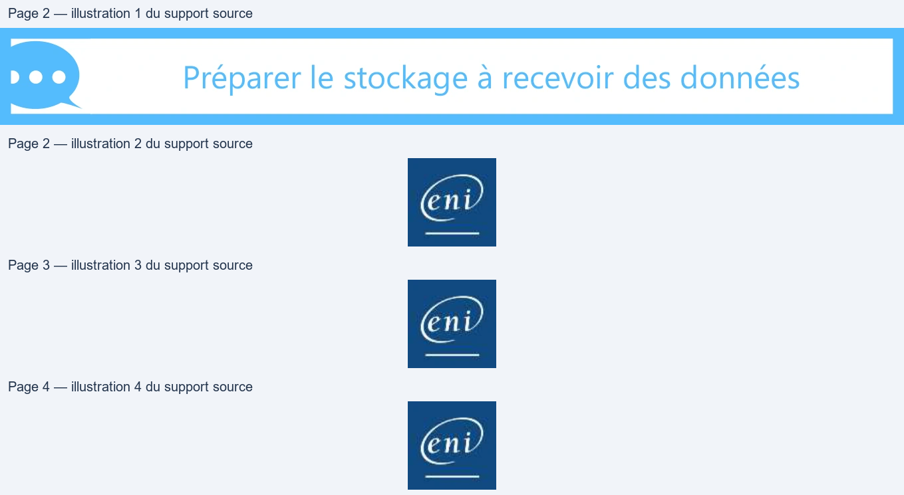
Page 5
Considérations générales sur les systèmes de fichiers
Le Superbloc
• Le superbloc contient les informations vitales du système de
fichiers. Donc par mesure de sécurité, il est dupliqué à différents
endroits du système de fichiers. Il contient les informations
suivantes :
• Taille des blocs
• Taille du système de fichiers
• Nombre de montages effectués
• Nombre maximum de montages avant vérification
• Date de dernier montage
• Intervalle maximum entre deux montages avant vérification
• Un pointeur vers l’inode racine du système de fichier
Page 6
Considérations générales sur les systèmes de fichiers
Inodes et bloc d’indirection
• Les inodes sont regroupés par bloc dans un système de fichiers.
La taille d’un inode est de 128 octets. Avec des blocs de 4 Ko, il y
aura 32 inodes par bloc d’inodes. Un inode contient des
informations propres au fichier qu’il représente :
• Type de fichier : -,d,b,c,l,p,s
• Mode ou droit d’accès : en octal, ex : 0644 (rw-r--r--)
• Nombre de liens physiques : si la valeur tombe à zéro, le fichier est considéré
comme supprimé.
• UID : propriétaire
• GID : groupe propriétaire
Page 7
Considérations générales sur les systèmes de fichiers
Inodes et bloc d’indirection
• Taille du fichier : en octets
• Champs date : atime (dernier accès au fichier), ctime (dernier changement
des informations de l’inode), mtime (dernier changement de données réelles
du fichier)
• 15 adresses : pointant vers les blocs de données réelles du fichier
L’inode ne possède pas le nom du fichier, celui-ci est renseigné
dans le répertoire contenant ce fichier.
Texte relevé dans les illustrations
N
À =
Page 8
Gestion des espaces de stockage – File System
Systèmes de fichiers
Linux
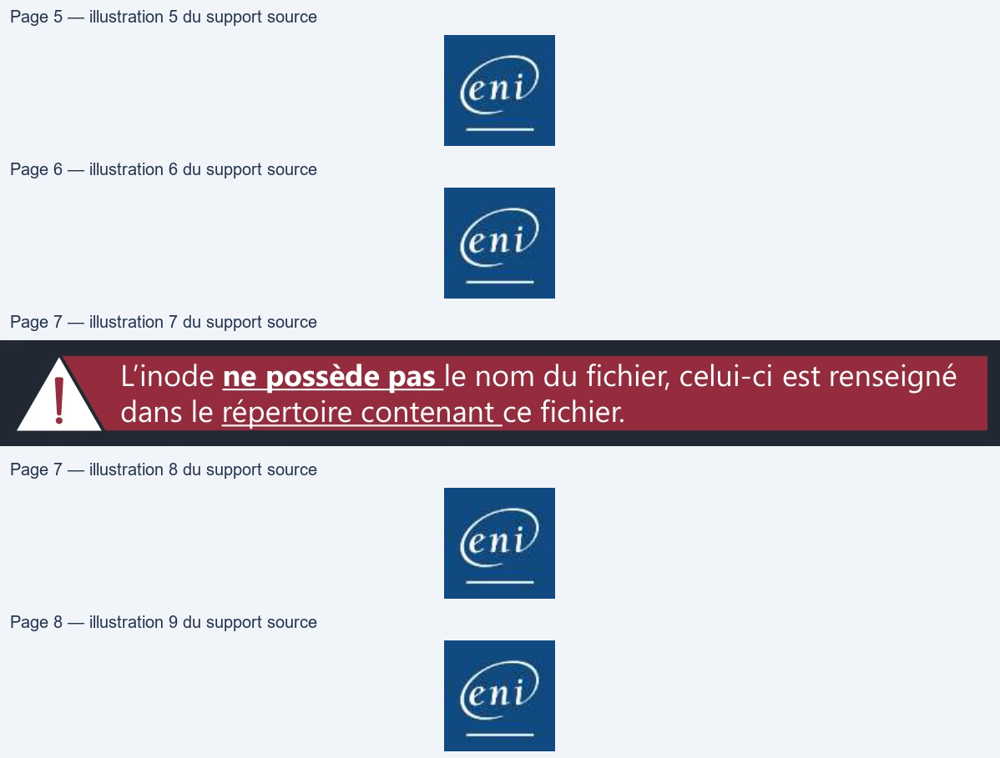
Page 9
Systèmes de fichiers Linux
Systèmes de fichiers EXT
• L’ext2, l’ext3 et l’ext4 sont implémentés sur un système Debian
• La différence entre ext2 et ext3 est la journalisation, améliorant la
récupération du système de fichier en cas de crash (extinction
brutale du PC par exemple)
• Le système de fichier ext4 est une amélioration de l’ext3 mais
réécrit de zéro
• ext4 est le système de fichier par défaut sur Debian 10.
• Son avantage est qu’il est peu sujet à la fragmentation grâce à la
préallocation des blocs de données contigus
Page 10
Systèmes de fichiers Linux
Systèmes de fichiers EXT
Caractéristiques :
• Taille maximale de fichier :
16 Tio (avec des blocs de 4 Ko)
• Nombre maximal de fichiers :
4 milliards
• Taille maximale du nom de fichier :
255 octets
• Taille maximale de volume :
1 Eio (limité à 16 Tio par
e2fsprogs avec des blocs de
4 Ko)
• D’autres systèmes de fichiers sont gérés sous Debian, entre autres :
NTFS, FAT
• Il est bien sûr possible d’installer d’autres outils de gestion de
systèmes de fichiers comme XFS, Btrfs, etc.
Page 11
Gestion des espaces de stockage – File System
Outils de gestion des
systèmes de fichiers
Page 12
Outils de gestion des systèmes de fichiers
Création de systèmes de fichiers
• Le formatage va installer sur un périphérique de stockage un système de fichier. Sans un système de fichier, le périphérique de stockage est inutilisable • Un périphérique de stockage peut être une partition (ex: /dev/sdc1) ou un volume logique (ex : /dev/vgsys/lvroot ou /dev/mapper/vgsys- lvhome)
ext4
ext4
ext4
/dev/sdc
vgsys
lvroot
lvhome
/dev/sdc1
Texte relevé dans les illustrations
[2
|
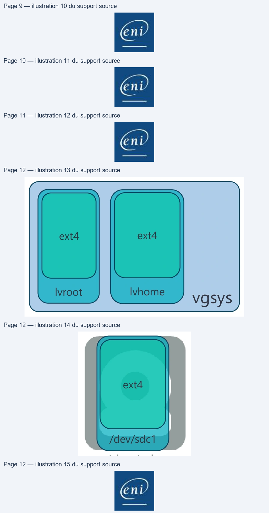
Page 13
Outils de gestion des systèmes de fichiers
Création de systèmes de fichiers
• mkfs.[fstype] <options> [périphérique de stockage]
• mkfs.[fstype]est une commande simplifiant la mémorisation des commandes de création de systèmes de fichiers. C’est en fait une fausse commande qui fait appel à la vraie commande de création • Exemple : mkfs.ext4 est la commande mke2fs avec des options préconfigurées pour générer de l’ext4
• Pour savoir quelle est la commande utilisée par un mkfs.[fstype], il
suffit de consulter la commande man mkfs.[fstype]
Page 14
Outils de gestion des systèmes de fichiers
Création de systèmes de fichiers
• Création d’un système de fichiers ext4 sur partition /dev/sda2
root@deb:~# mkfs.ext4 /dev/sda2
• Création d’un système de fichiers ext4 sur volume logique lv1
root@deb:~# mkfs.ext4 /dev/vggroup1/lv1
• Création d’un système de fichiers NTFS (nécessite le paquet ntfs-3g)
root@deb:~# mkfs.ntfs /dev/sde1
Page 15
Outils de gestion des systèmes de fichiers
Modification de systèmes de fichiers
• tune2fs <options> [périphérique de stockage]
• tune2fs permet de modifier des options d’un système de fichiers type ext
• Il permet aussi de récupérer les informations du superbloc
• Options usuelles • -L permet de modifier l’étiquette du système de fichiers • -l permet d’afficher les informations du superbloc • -i permet de modifier l’intervalle entre deux vérifications • -c permet de modifier le nombre maximum de montages déclenchant une vérification
• resize2fs <options> [périphérique de stockage]
• resize2fs permet de changer la taille d’un système de fichiers
Page 16
Outils de gestion des systèmes de fichiers
Vérification d’un système de fichiers
• fsck.<fstype> <options> [périphérique de stockage]
• La vérification d’un système de fichiers permet de contrôler l’intégrité des données
présentes sur celui-ci
• Il est possible de le faire manuellement tout comme il est possible de l’automatiser
au démarrage
• Comme pour les commandes de formatage, la vérification peut facilement se faire
avec les commandes fsck.<fstype>
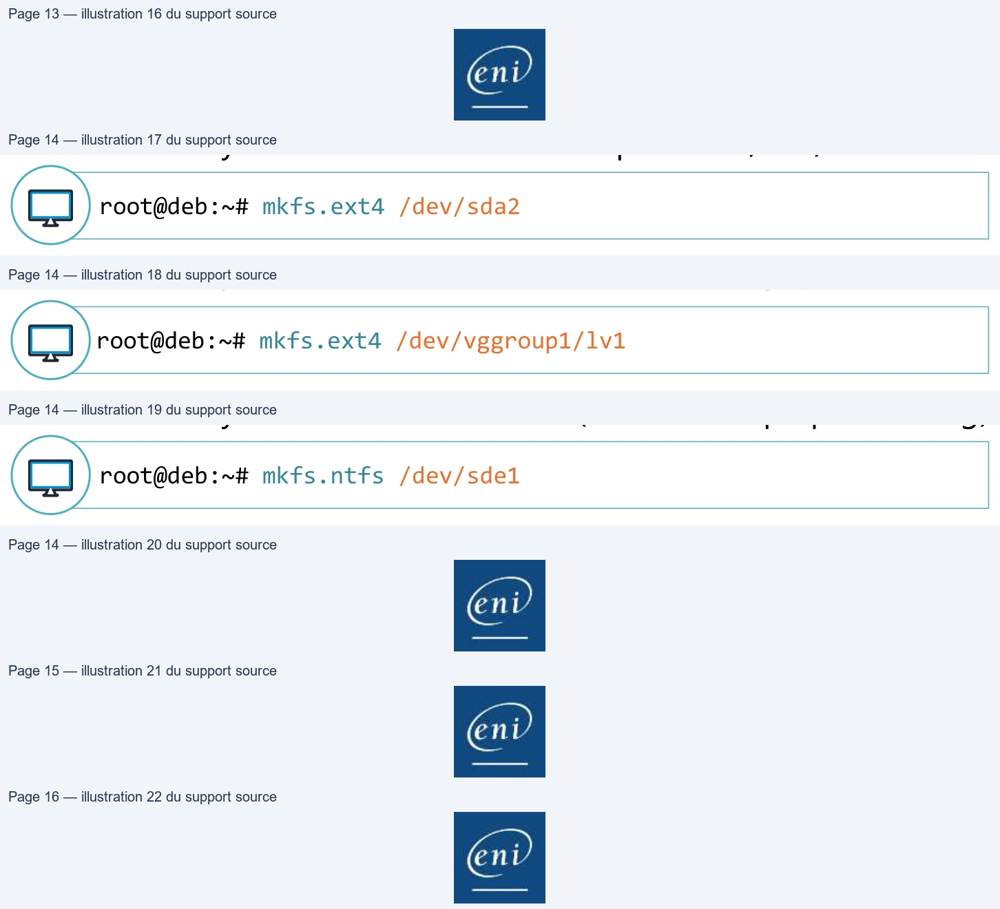
Page 17
Outils de gestion des systèmes de fichiers
Prise d’information
• blkid <options> [périphérique de stockage]
• La commande blkid permet d’afficher les informations relatives à un périphérique particulier. Sans argument, elle affichera les informations relatives à tous les périphériques formatés
root@deb:~# blkid /dev/sda1: UUID="32a0cf22-91d5" TYPE="ext2" PARTUUID="732e6aa1-01" /dev/sda5: UUID="VDfsmc-gci2" TYPE="LVM2_member" PARTUUID="732e6aa1" /dev/sr0: UUID="2021" LABEL="Deb10" TYPE="iso9660 PTUUID="49506c1e" PTTYPE="dos" /dev/mapper/vgsys-lvroot: UUID="bffe9183-34a3" TYPE="ext4" /dev/mapper/vgsys-lvswap_1: UUID="d5d6cc72-21ed" TYPE="swap"
Texte relevé dans les illustrations
pO
Page 18
Outils de gestion des systèmes de fichiers
Prise d’information
• lsblk <options> [périphérique de stockage]
• La commande lsblk permet d’afficher sous forme arborescente les informations relatives aux périphériques et aux systèmes de fichiers
root@deb:~# lsblk NAME MAJ:MIN RM SIZE RO TYPE MOUNTPOINT sda 8:0 0 20G 0 disk ├─sda1 8:1 0 243M 0 part /boot ├─sda2 8:2 0 1K 0 part └─sda5 8:5 0 19,8G 0 part ├─vgsys-lvroot 254:0 0 17,8G 0 lvm / └─vgsys-lvswap 254:1 0 2G 0 lvm [SWAP] sr0 11:0 1 3,4G 0 rom /media/cdrom0
Texte relevé dans les illustrations
ee
ene
Page 19
Outils de gestion des systèmes de fichiers
Prise d’information
root@deb:~# lsblk -f NAME FSTYPE LABEL UUID MOUNTPOINT sda ├─sda1 ext2 32a0cf22-91d5-548810a16c45 /boot ├─sda2 └─sda5 LVM2_member VDfsmc-gci2-R5IA-ozNO8x ├─vgsys-lvroot ext4 bffe9183-34a3-49d4-b1a4 / └─vgsys-lvswap swap d5d6cc72-10f5-48e4-bd60 [SWAP] sdb └─sdb1 ext4 HOME 42237738-92a8-4ddf-9326 /home sr0 iso9660 Deb10 2021-02-16 /media/cdrom0
Page 20
Outils de gestion des systèmes de fichiers
Démo
Les systèmes de fichiers
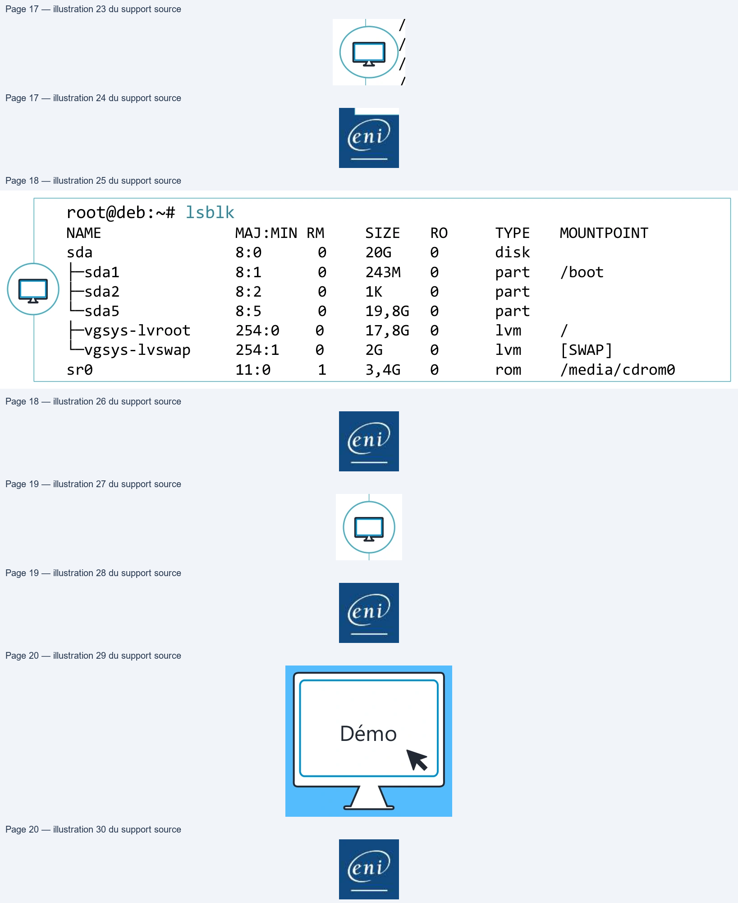
Page 21
Gestion des espaces de stockage – File System
Monter des systèmes de
fichiers
Page 22
Monter des systèmes de fichiers
Montage d’un système de fichiers
• Sous un système d’exploitation Linux, comme tout est fichier, la
mise à disposition d’un système de fichier venant d’un espace de
stockage (partition, LVM, RAID, etc.) se fera en définissant un
répertoire comme point de montage
• Ce point de montage sera le chemin par lequel accéder aux
données du système de fichier
• Pour un montage temporaire d’un système de fichiers, il est
conseillé d’utiliser le répertoire /mnt. S’il faut monter plusieurs
systèmes de fichiers de façon temporaire, il est possible de créer
des sous-répertoires dans /mnt, pour chacun des systèmes de
fichiers
Page 23
Monter des systèmes de fichiers
Montage manuel avec mount
• mount <options> [périphérique source] [/point/de/montage]
• La commande mount permettra de mettre à disposition un système de fichiers dans un répertoire
• Options possibles :
• -t [fstype]
Détermine le type de système de fichiers à monter
• -o [option]
Permet de définir différentes options séparées par une virgule
• sync/async
Active ou non l’utilisation de la mise en tampon en RAM des données
avant écriture dans le système de fichiers.
Par défaut : async
Page 24
Monter des systèmes de fichiers
Montage manuel avec mount
• Options possibles suite :
•
exec/noexec
Active la possibilité d’exécuter des fichiers
exécutables présents sur le système de fichiers.
Par défaut : exec
•
ro/rw
Monte le système de fichiers en lecture seule ou
en lecture/écriture.
Par défaut : rw
•
suid/nosuid
Active la possibilité d’exécuter les binaires avec
l’interprétation du SUID positionné dessus.
Par défaut : suid
•
remount
Permet de changer une ou des options de
montage sans démonter le système de fichiers.
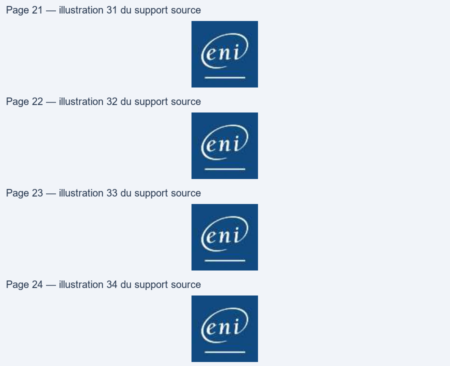
Page 25
Monter des systèmes de fichiers
Montage manuel avec mount
root@deb:~# ls /mnt root@deb:~# mount –t ext4 /dev/sdc1 /mnt root@deb:~# ls /mnt contacts liste_taches.txt preparation root@deb:~#
ext4
/dev/sdc1
/ /bin /boot /etc /mnt /var [...]
Texte relevé dans les illustrations
=
Page 26
Monter des systèmes de fichiers
Informations sur les montages
• mount La sortie de mount est faiblement lisible mais permet de savoir facilement les options de montage appliquées
root@deb:~# mount sysfs on /sys type sysfs (rw,nosuid,nodev,noexec,relatime) [...] /dev/mapper/vgsys/lvroot on / type ext4 (rw,relatime,errors=remount- ro,data=ordered) securityfs on /sys/kernel/security type securityfs (rw,nosuid,nodev,noexec,relatime) tmpfs on /dev/shm type tmpfs (rw,nosuid,nodev) tmpfs on /run/lock type tmpfs (rw,nosuid,nodev,noexec,relatime,size=5120k) tmpfs on /sys/fs/cgroup type tmpfs (ro,nosuid,nodev,noexec,mode=755) [...] /dev/mapper/vgsys/lvhome on /home type ext4 (rw,relatime,data=ordered) /dev/sdc1 on /mnt type ext4 (rw,relatime,data=ordered) /dev/sr0 on /media/cdrom0 type iso9660 (ro,nosuid,nodev,noexec,relatime,user)
Texte relevé dans les illustrations
a
Page 27
Monter des systèmes de fichiers
Informations sur les montages
• findmnt permet une meilleure lisibilité et surtout de prendre l’information sur un seul point de montage
root@deb:~# findmnt TARGET SOURCE FSTYPE OPTIONS / /dev/mapper/vgsys-lvroot ext4 rw,errors=remountro ├─ /sys sysfs sysfs rw,nosuid,noexec │ ├─ /sys/kernel/security securityfs rw,nosuid,nodev,noexec │ ├─ /sys/fs/cgroup tmpfs tmpfs [...] ├─ /home /dev/mapper/vgsys/lvhome ext4 rw,relatime,data=ordered ├─ /mnt /dev/sdc1 ext4 rw,relatime,data=ordered └─ /media/cdrom0 /dev/sr0 iso9660 ro,nosuid,nodev,noexec,relatime
Texte relevé dans les illustrations
N
Page 28
Monter des systèmes de fichiers
Informations sur les montages
Pour voir l’information sur un seul point de montage, il suffit de le
cibler :
root@deb:~# findmnt /dev/sdc1 TARGET SOURCE FSTYPE OPTIONS /mnt /dev/sdc1 ext4 rw,relatime,data=ordered
Texte relevé dans les illustrations
N
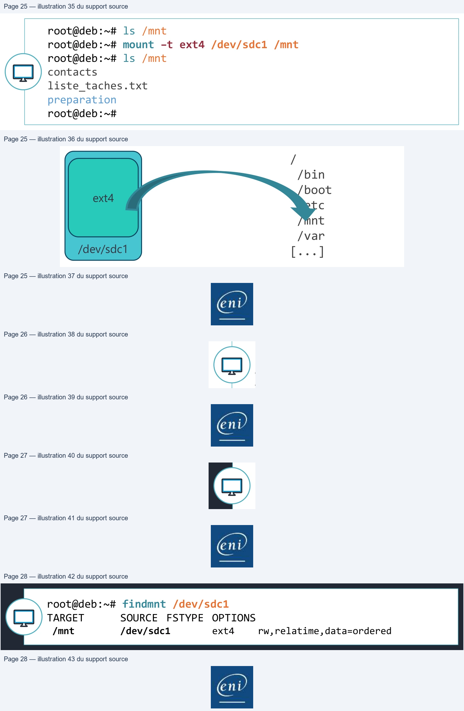
Page 29
Monter des systèmes de fichiers
Démonter un volume
• umount [périphérique de stockage]
ou • umount [point de montage]
• À faire par exemple pour retirer une clé USB ou disque externe
• Attention, il ne faudra pas qu’un utilisateur utilise le volume monté
pour permettre sa déconnexion.
root@deb:~# umount /mnt
Texte relevé dans les illustrations
N
Page 30
Monter des systèmes de fichiers
Démo
Montage manuel
Page 31
Gestion des espaces de stockage – File System
Montage automatique
des systèmes de fichiers
Page 32
Montage automatique des systèmes de fichiers
Montage automatique
Les montages automatiques sont effectués par systemd au tout
début du démarrage du système d’exploitation. La déclaration des
montages automatiques est présente dans le fichier /etc/fstab
# /etc/fstab: static file system information.
# <file system>
<mount point>
<type>
<options>
<dump> <pass>
/dev/mapper/vgsys-lvroot
/
ext4
errors=remount-ro
0
1
# /boot was on /dev/sda1 during installation
UUID=32a0cf22-548810a16c45 /boot
ext2
defaults
0
2
/dev/vgsys/lvhome
/home
ext4
defaults 0
2
/dev/mapper/vgsys-lvswap
none
swap
sw
0
0
/dev/sr0
/media/cdrom0
udf,iso9660
user,noauto
0
0
Texte relevé dans les illustrations
eo
Cr
| # / etc/f stab : stati c fil e system i nf ormati on . | ||||
| # <fil e system> <mount poi nt> | <type> | <opti ons> | <d ump> | <pass> |
| /d ev/ mapper/ vgsys -l vroot / | ext4 | errors=remount -ro | 0 | 1 |
| # /b oot was on /d ev/ sd a1 d uri ng i nstall ati on | ||||
| UUID =32a0cf22 -548810a16c45 /b oot | ext2 | d ef aults | 0 | 2 |
| /d / /l h /h ev vgsys v ome ome | ext4 | d ef aults0 | 2 | |
| /d / / l ev mapper vgsys vswap none - | swap | sw | 0 | 0 |
| /d ev/ sr0 / medi a/ cd rom0 | udf i so9660 , | user noauto , | 0 | 0 |
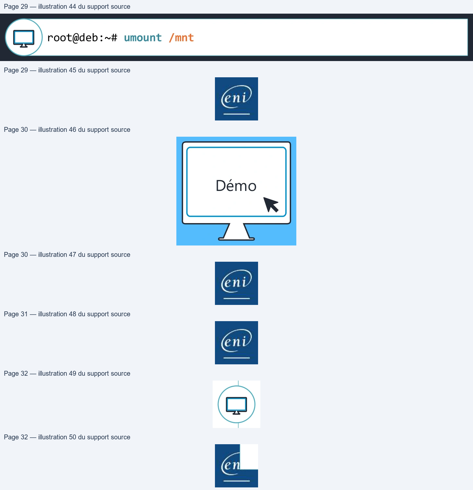
Page 33
Montage automatique des systèmes de fichiers
Montage automatique
• La section <file system> :
• Cette colonne déclare le système à monter. Cette source peut être exprimée de
plusieurs façons :
• Via un UUID, la façon la plus sécurisée mais humainement plus difficile à reconnaître
• Via le LABEL, humainement plus pratique que l’UUID mais il pose un problème en cas de
doublon
• Via le chemin du périphérique, on l’utilise principalement pour les LVM car il n’est pas
possible d’avoir plusieurs volumes LVM avec le même nom sur un système
• Il est fortement déconseillé de l’utiliser pour des partitions (ex : /dev/sdb1)
• La section <mount point> :
• Cette colonne déclare le répertoire de montage du système de fichiers
Page 34
Montage automatique des systèmes de fichiers
Montage automatique
• La section <type> :
• Cette colonne déclare le type de système de fichiers. Il est possible de mettre auto mais cela
ralentit le montage des périphériques
• La section <options> :
• Cette colonne déclare les options de montage. Il est possible de mettre defaults
• Les options dans defaults sont : async,nouser,exec,rw,auto,suid,dev
• La section <dump> :
• Cette colonne est très faiblement utilisée. Elle correspond à des paramètres de configuration de
la commande dump
• La section <pass> :
• Cette section permet de savoir si le système doit analyser l’intégrité du système de fichiers afin
de corriger les problèmes avant de le monter. (commande fsck)
• Si la valeur est à 0 : pas de vérification, si elle est supérieure à 0 alors le système analysera les
systèmes de fichiers (1 pour la racine, 2 pour les autres)
Page 35
Montage automatique des systèmes de fichiers
Montage automatique
• Afin de garantir la bonne intégration d’une nouvelle ligne dans le
fichier /etc/fstab, il est important de la tester avant le redémarrage
du poste. Le moyen le plus simple est d’utiliser la commande
mount en ne précisant que le point de montage
root@deb:~# mount /srv/data mount: impossible de trouver /srv/data dans /etc/fstab
• Dans cet exemple, la commande indique qu’elle ne trouve pas
d’entrée de /srv/data dans le fstab
• Dans le cas où une ligne indique /srv/data dans le fichier fstab
alors le montage se fera par rapport aux différentes déclarations
• Si la commande ne renvoie rien, c’est que le montage s’est
correctement effectué
Page 36
Montage automatique des systèmes de fichiers
Démo
Montage automatique
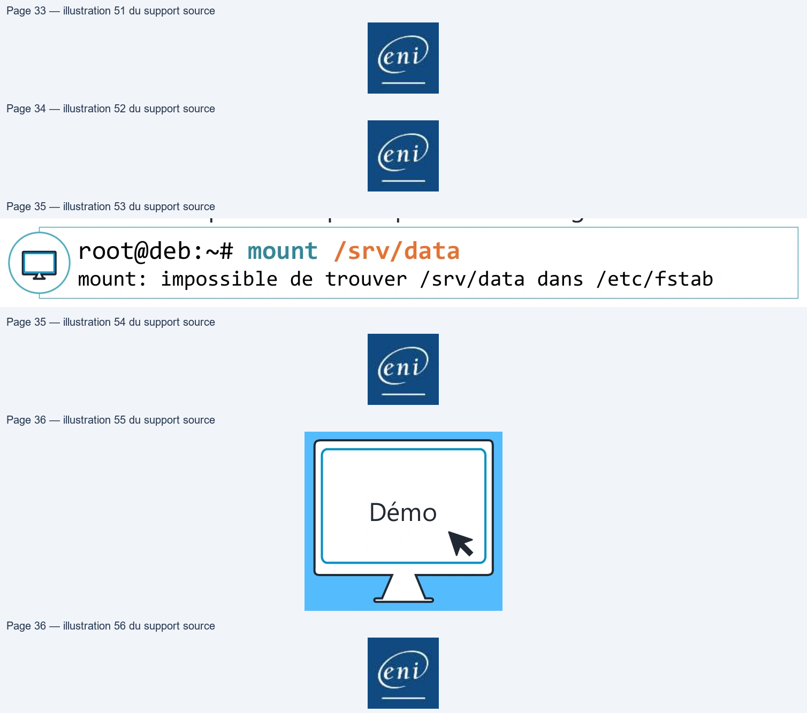
Page 37
Gestion des espaces de stockage – File System
Commandes
informatives
Page 38
Commandes informatives
Informations sur les systèmes de fichiers
• Nous avons déjà utilisé les commandes informatives suivantes : • blkid permet de récupérer les informations sur les disques, partitions et volumes logiques LVM
• lsblk va donner un affichage plus hiérarchisé de ces mêmes informations
• findmnt offre un affichage hiérarchisé des systèmes de fichiers montés
Page 39
Commandes informatives
Informations sur les systèmes de fichiers
• df <options> [/point/de/montage]
• La commande df permet de prendre des informations utiles sur les systèmes de fichiers montés
• Options usuelles :
• -h : affiche la taille en puissance de 1024 (K,M,G…)
• -i : affiche les informations sur les inodes
root@deb:~# df -h Sys. de fichiers Taille Utilisé Dispo Uti% Monté sur udev 982M 0 982M 0% /dev tmpfs 199M 22M 178M 11% /run /dev/mapper/vgsys-lvroot 18G 4,3G 13G 26% / [...]
Texte relevé dans les illustrations
DO
env
Page 40
Commandes informatives
Informations sur les systèmes de fichiers
• La commande ls -l ne permet pas de connaître la taille d’un répertoire. En effet, elle remonte juste la taille utilisée par l’inode du répertoire et non son contenu. Pour connaître la taille d’un répertoire, il faut utiliser la commande du du <options> [/point/de/montage]
• Options usuelles :
• -h : affiche la taille en puissance de 1024 (K,M,G…)
• -s : n’affiche pas les sous-répertoires mais uniquement le répertoire en
argument
root@deb:~# du –hs /etc 6,9M /etc
Texte relevé dans les illustrations
>
env
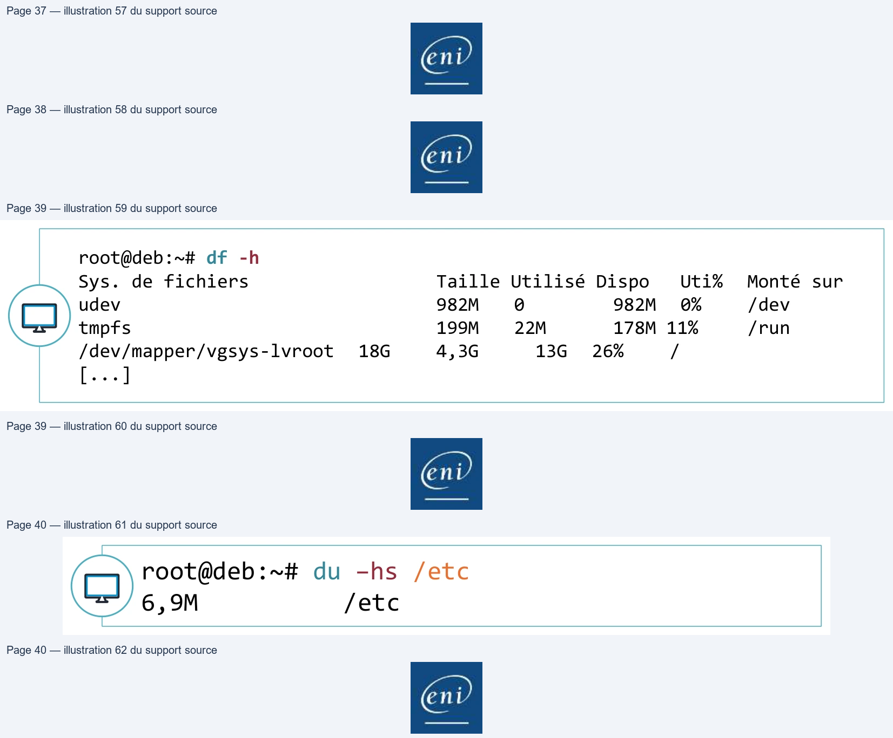
Page 41
Commandes informatives
Démo
Prises d’informations sur les FS
Page 42
Gestion des espaces de stockage – File System
TP
Démo
Préparation des systèmes de fichiers
Lecture continue du texte source
Gestion des espaces de stockage – File System
TPDémo
Préparation des systèmes de fichiersTexte relevé dans les illustrations
|
Page 43
Gestion des espaces de stockage – File System
Conclusion
• Vous savez créer et manipuler des systèmes de fichiers Linux
• Vous savez monter ceux-ci en manuel
• Vous savez automatiser un montage au démarrage du système
d’exploitation
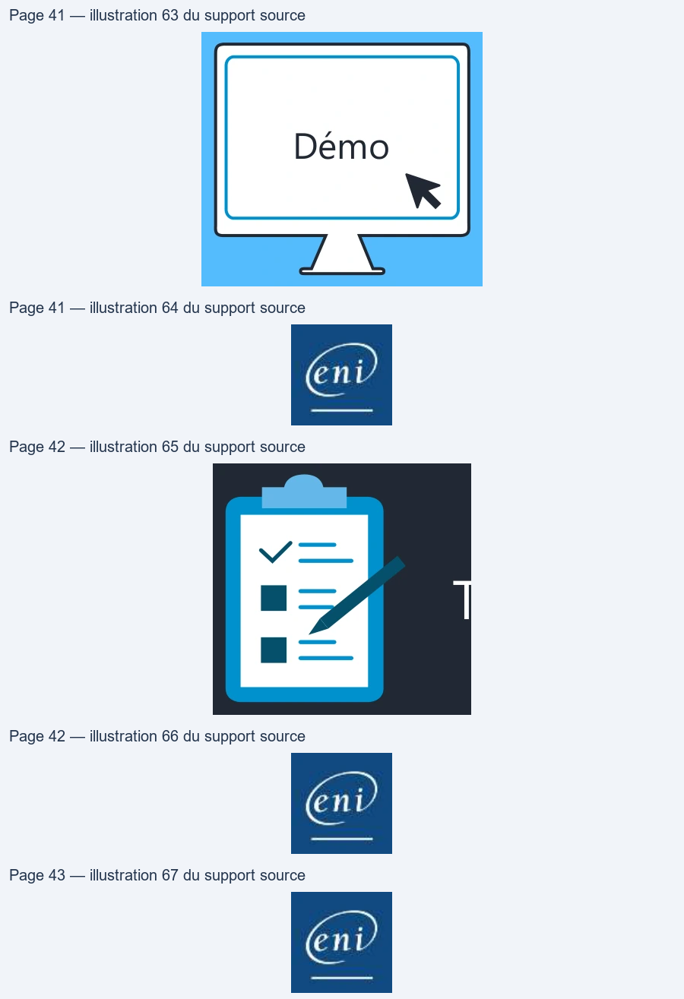
Référence du document : 1TlaOKZJHK1_lEreDfvYwVcqS1E1OIWGi · SHA-256 d5eaf406b6ddc10d…
Énoncé · M09TP01 - Enoncé - Préparation des systèmes de fichiers · 2 pages transcrites
Page 1
Administration Debian GNU/Linux
Préparation des systèmes
de fichiers
TP du Module 09 – Gestion des espaces de stockage – File Systems
Avant de démarrer ce TP, il convient d’avoir suivi les vidéos des modules 1 à 9 et d’avoir
réalisé les TP proposés.
Durée estimée
30 à 45 minutes
Énoncé
I.
Gestion des systèmes de fichier
A partir du volume logique lvvar, configurer un système de fichier ext4 avec une étiquette
VAR
Agrandir le système de fichier présent dans le volume logique home afin qu’il utilise toute la
place du volume logique.
II.
Migration du répertoire /var
Migrer le répertoire /var vers le volume logique var tout en préservant les données
existantes.
Conseils de mise en œuvre :
•
Faites un snapshot de votre VM
•
Vérifier l'utilisation de /var avant de copier les fichiers (lsof).
•
Prendre toutes les précautions nécessaires pour éviter l’écriture dans l’arborescence de
/var afin de pouvoir copier correctement les fichiers
•
Utiliser un montage temporaire pour pouvoir copier les données de l'ancien vers le
nouveau volume
•
Copier les données en préservant les permissions
Page 1/2
© ENI – Tous droits réservés
Texte relevé dans les illustrations
BE
Page 2
Administration Debian GNU/Linux
III.
Automatisation du montage au démarrage : sur la
station avec environnement graphique
Activer le montage automatique au démarrage du volume logique lvvar vers /var
Solution
Une solution est proposée pour ce TP sous la forme d'un PDF commenté, disponible dans les
ressources à télécharger.
Page 2/2
© ENI – Tous droits réservés
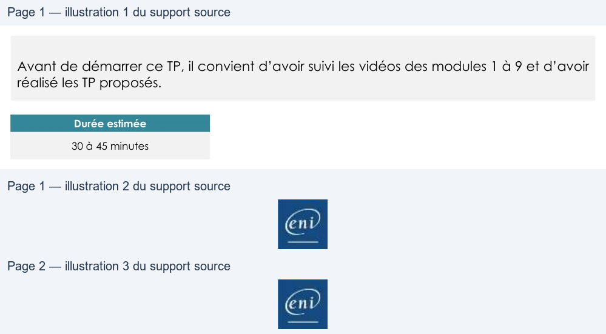
Référence du document : 1iToRAUfiKyWYDgDiMORqrwPWAV5qZU-T · SHA-256 8561ad5edd2ed8ef…
Correction · M09TP01 - Solution - Préparation des systèmes de fichiers · 4 pages transcrites
Correction originale : à consulter après avoir tenté l’exercice.
Page 1
Administration Debian GNU/Linux
Préparation des systèmes
de fichiers
TP du Module 09 – Gestion des espaces de stockage – File Systems
Avant de démarrer ce TP, il convient d’avoir suivi les vidéos des modules 1 à 9 et d’avoir
réalisé les TP proposés.
Durée estimée
30 à 45 minutes
Énoncé
I.
Gestion des systèmes de fichier
A partir du volume logique var, configurer un système de fichier ext4 avec une étiquette
VAR
La commande mkfs permet de préciser directement le type avec .ext4.
l’option -L affecte le label au FS.
NB : il est aussi possible de modifier l’étiquette d’un FS existant avec tune2fs
Vérifier avec blkid
Agrandir le système de fichier présent dans le volume logique home afin qu’il utilise toute la
place du volume logique.
resize2fs permet d’étendre le FS existant après avoir étendu le LV lors du précèdent TP
NB : il est possible que le FS soit déjà à la taille maximale si l’option -r avait été utilisé avec lvextend
Page 1/4
© ENI – Tous droits réservés
Texte relevé dans les illustrations
ee
Des nappes/vasystes:Lwar: LABELS ARS WID=n3431Cd7-3400 sees n24c 57ac643"c1)t™BLOCK St7E="4096% Trenet" |
Page 2
Administration Debian GNU/Linux
II.
Migration du répertoire /var
Migrer le répertoire /var vers le volume logique var tout en préservant les données
existantes.
Conseils de mise en œuvre :
•
Faites un snapshot de votre VM
→
Ce snapshot permettra un retour arrière en cas d'erreur
•
Vérifier l'utilisation de /var avant de copier les fichiers (lsof).
La commande lsof (List Open Files) permet de dénombrer les fichiers en cours d'utilisation par des processus.
En filtrant (grep) sur le répertoire /var, on dénombre plusieurs centaines de lignes
•
Prendre toutes les précautions nécessaires pour éviter l’écriture dans l’arborescence de
/var afin de pouvoir copier correctement les fichiers
→
La méthode la plus simple pour stopper les nombreux processus utilisant des fichiers présents sous /var est de
passer en mode rescue.
Si un service tel systemd-journald utilise encore des fichiers,
vous pouvez le stopper avec la commande adéquat
•
Utiliser un montage temporaire pour pouvoir copier les données de l'ancien vers le
nouveau volume
La création d'un sous dossier dans /mnt est optionnelle
La commande mount permet ensuite d’effectuer le montage temporaire
Page 2/4
© ENI – Tous droits réservés
Texte relevé dans les illustrations
© DebChent - Witesre Workstation
DebClen
-
lace Snagshot
x
File
Edt
View
YM
Tabs
Help
ff
-
à
D
I
aaa
D
Breasnes at ts you gro
sdeul be
rad
rome
3
x
.
Deacons sarthat sun
car
return the marre ni
ae
Parceene Devil
CPE
ee grein Jeu
Pause
Corl + Shift P
TS
ET242
|
TT
Derrgton:
Le sncpste, CZ pré overt
o wegen
du dose: sur
Grab Input
Ctl+G
SH
Fe
Srapshot
:
Take Snapshot
oot@debclient:~#
systemctl
stop
systemd- jx
Poot@debclient:“#
lsof
|grep
/var
rootédebclient: "#4 mkdir “mnt/var
Page 3
Administration Debian GNU/Linux
La commande findmnt affiche bien l'utilisation de /mnt/var comme point de montage pour lvvar
•
Copier les données en préservant les permissions
Les options utiles de la commande cp ici sont :
-p : préserver les permissions et groups et utilisateurs propriétaires des fichiers
-r : la récursivité permet de copier tous les sous-dossiers et leurs contenus
-v pour avoir un affichage verbeux.
Une fois l'opération achevée on peut démonter le LV
Une fois cela fait, on remonte le volume logique immédiatement sur /var
Puis relancer la cible graphique pour verifier le bon fonctionnement du système.
On s’assure que le LV est bien monté sur /var
Il est possible de vérifier le bon fonctionnement par exemple avec les fichiers journaux dans /var/log
III.
Automatisation du montage au démarrage : sur la
station avec environnement graphique
Activer le montage automatique au démarrage du volume logique lvvar vers /var
Editer le fichier /etc/fstab
En dernière ligne, le LV est appelé par le LABEL apposé sur le file-system
→
On repasse en mode rescue pour tester AVANT de redémarrer
Ne pas oublier de stopper les éventuels process encore consommateurs de fichiers sur /var
Page 3/4
© ENI – Tous droits réservés
Texte relevé dans les illustrations
root@édebclient:"#
findmnt
TARGET
SOURCE
FSTYPE
OPTIONS
dev/mapper/vgsystem-lvroot
ext4
ru,
relatime,errors=remount-ro
sys
sysfs
systs
ru nosuid,nodev,noexec,relatime
mt/var
dev/mapper/vesystem-lvvar
ext4
ru,
relatime
root@debe lient:"#
umount
“mnt “var
root@depclient:"# systemctl
isolate graphical
/var
#dev/mapper/vgsystem-lvvar
1
e
ie
P
e
i
eede
ek
em-
ebcli
k
25
1
7
i
r
mi
€
£
J
te
t
ext4
(
[
|
t
ome
ext4
defaults
ë
=
te
inc
i
vfat
(
1
5 LE
swap
sw
€
i
irom
udf,iso9660
user,noauto
LABEL
ext4
auto
root@debclient:“#
systemctl
stop
systemd-jx
root@debclient:“#
lsof
|grep
/var
Page 4
Administration Debian GNU/Linux
On défait le montage manuel qui avait été fait sur /var
On relance le montage de /var, mais ce coup-ci sans options ni autre argument,
ce qui implique la lecture des informations du fichier /etc/fstab
Si tout cela fonctionne bien, on peut enfin redémarrer le système en guise de dernière vérification.
En cas d’erreur, reprendre ces étapes, avec retour sur le snapshot préalablement pris si besoin.
Page 4/4
© ENI – Tous droits réservés
Texte relevé dans les illustrations
root@debclient:"#
umount
“var
root@debeclient:"4
mount
“var
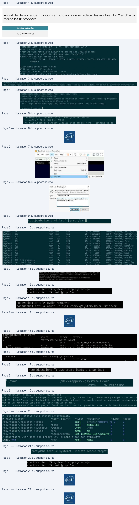
Référence du document : 1n4zSxPb4C7LiPn3-KO0a3IktlZBdqnBc · SHA-256 875c895cdf2ad435…
Complément IA / externe au cours — fiche pédagogique du portail
Cette fiche contient une reformulation et des aides d’apprentissage rédigées par IA. Elle est distincte de la transcription des documents du Drive et ne la remplace pas. Les schémas de synthèse de cette fiche sont des illustrations IA / externes au cours, sauf les captures explicitement attribuées à un document source.
Sources originales (A) : support et TP TSSR « Préparation des systèmes de fichiers ». Contenu du portail (B) : reformulation structurée des sources TSSR.
Objectifs¶
- Identifier le rôle d’un système de fichiers et d’un point de montage.
- Vérifier les systèmes de fichiers et leur occupation.
- Distinguer formatage, montage et persistance du montage.
Du bloc aux données¶
Un système de fichiers organise les données sur un espace de stockage. Le formatage prépare une partition ; le montage rend ce système de fichiers accessible dans l’arborescence. Ces étapes sont différentes et doivent être vérifiées séparément.
Points d’attention¶
- Formater détruit la structure de données de la cible : confirmer le périphérique avant la commande.
- Un montage manuel peut disparaître après redémarrage si sa configuration persistante n’est pas prévue.
- Utiliser des identifiants stables et vérifier le résultat après redémarrage dans le laboratoire.
À retenir¶
Un espace de stockage est utilisable lorsqu’il est correctement préparé, monté à l’emplacement attendu et contrôlé dans le temps.
Vérification des acquis¶
- Quelle commande affiche les systèmes de fichiers et leurs UUID ?
- Pourquoi distinguer formatage et montage ?
Réponses
lsblk -f.- Le formatage crée une structure ; le montage la rend accessible dans l’arborescence.
Complément IA / externe au cours — Séparer préparation et accès aux données¶
Illustration IA / externe au cours.
Cette illustration de synthèse IA relie les notions du support. Créer un système de fichiers et monter un système de fichiers existant sont deux opérations distinctes ; suivre la cible et les consignes exactes du TP.
M09 — Gestion des espaces de stockage — File System
10 questions
Teste tes connaissances sur ce module.